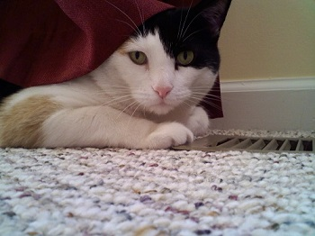
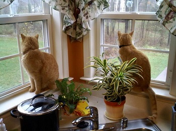
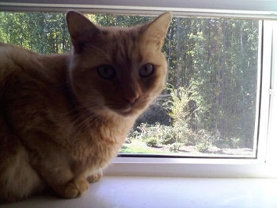
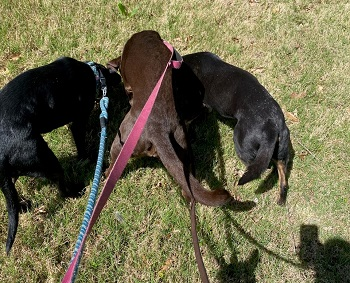

PETS

CLEO OLIVER BRODY OLIVER
I have no pets currently, but I used to have 3 cats, which I had for over half of my life. I had a dog named Bennett growing up, which I always thought was a weird name because at that age I had never heard of Bennett as being a last name. We got him for free from a neighbor because he kept running into our lawn and he was already named Bennett, but at least we didn’t get his brother Ooboo. Most of Bennett’s life was spent shocking himself by running past the electric fence.
While we still had Bennett, we got my first cat Oliver from the animal shelter when I was in 4th grade, even though my mom was allergic to cats. Bennett and Oliver got a long pretty well, but Bennett passed away 2 years later from a seizure. Oliver was lonely after Bennett was gone, so we were looking to get another cat. The Veterinarian told us that if we get a new cat, and Oliver doesn’t like them, then that cat will be lonely. Great logic, I don’t know if you could ever stop making that case for any amount of cats you get, but we believed the Vet and got 2 more cats instead of 1. They were also brother and sister so we didn’t want to split them up.
We named the new cats Brody and Cleo, and they fought constantly. They were all great cats though, and Oliver got a long well with them. Brody and Oliver were outside cats and killed lots of small animals and left them on our deck. They all three passed away though not too long after moving to NC from Delaware. It was probably for the best, since it was not really possible for them to keep going outside anymore after we moved. I no longer have any of my own pets but once I am living on my own I will probably get a cat. I often have to now take care of my sister's dogs.
